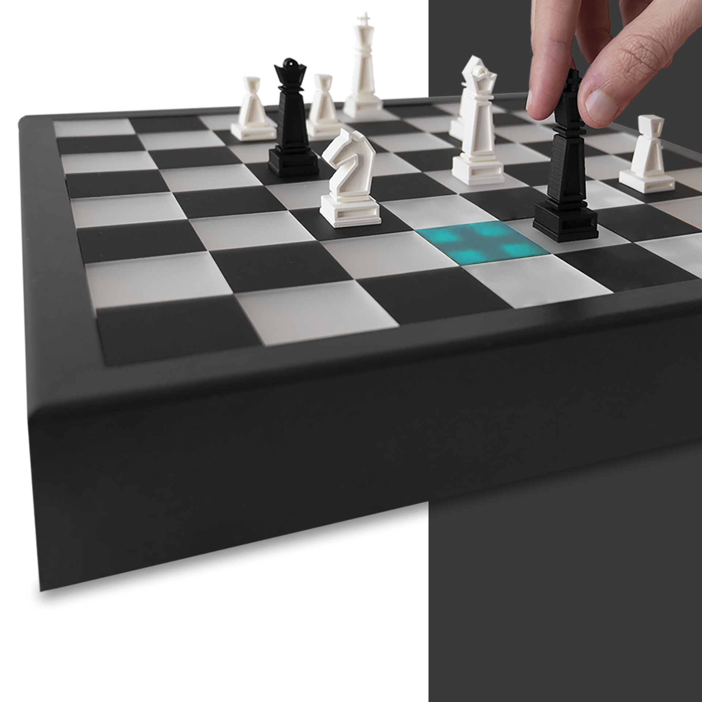

Hi, I'm Marcus.
Designer with focus on UX and networked systems, hence my current study: Internet of Things - Design of Networked Systems at the university of applied sciences in Schwäbisch Gmünd.
sense-chess
Simplify your chess analysis and learning
with intelligent use of technology

LostBrick
Simplify your chess analysis and learning
with intelligent use of technology